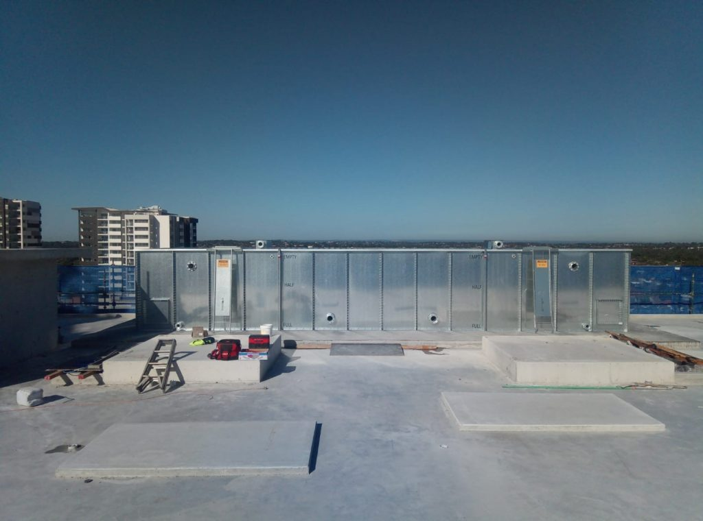
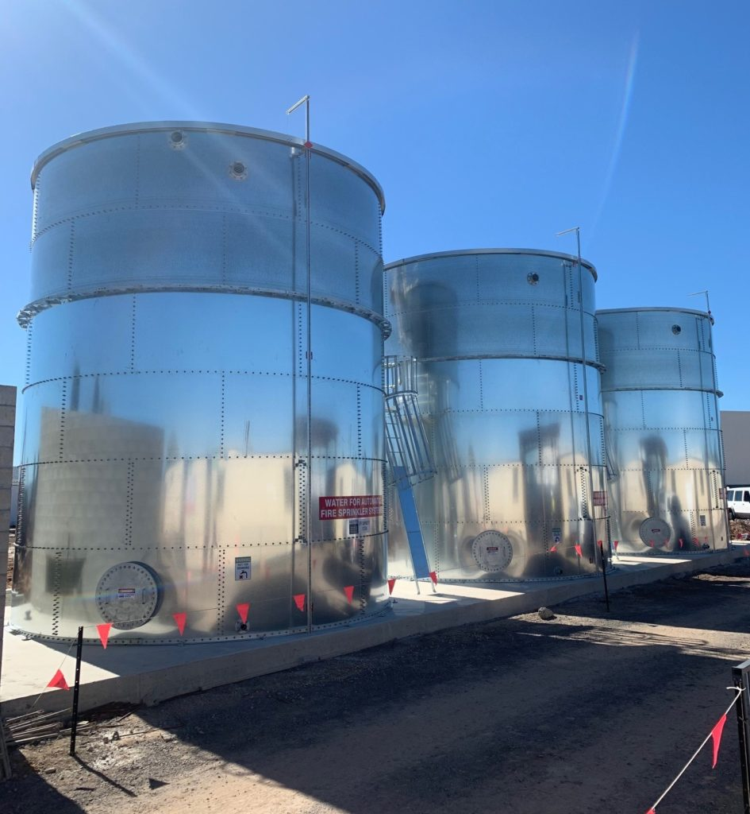
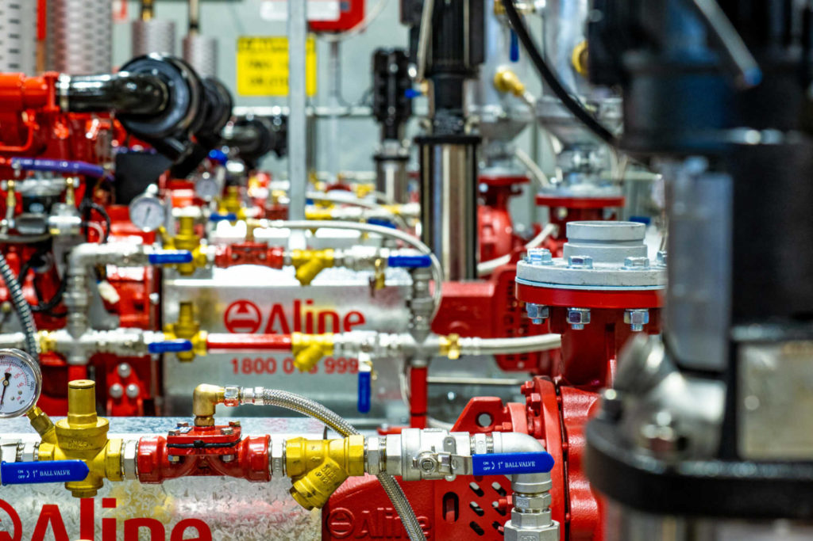
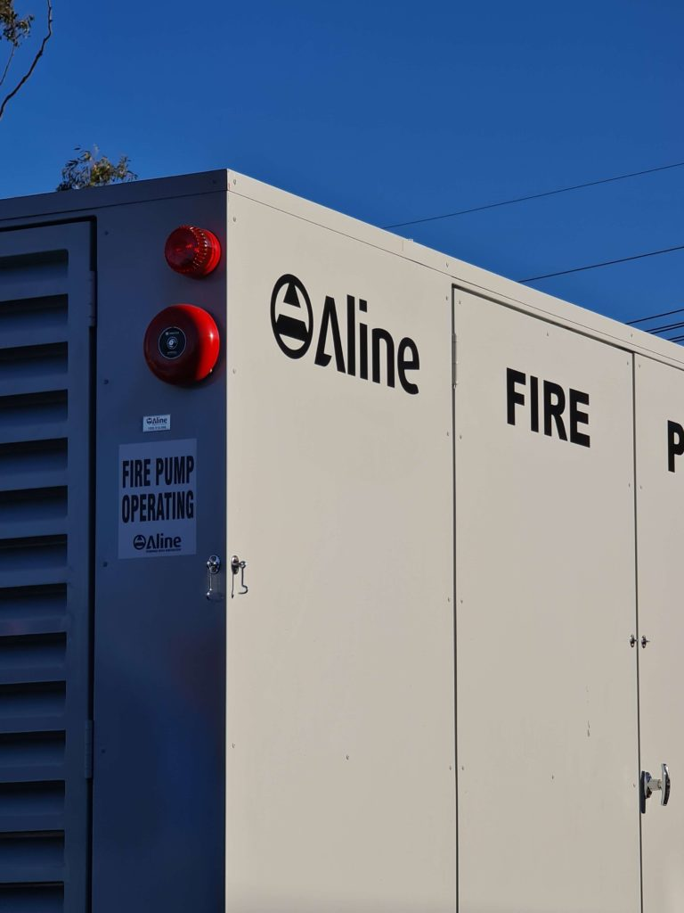
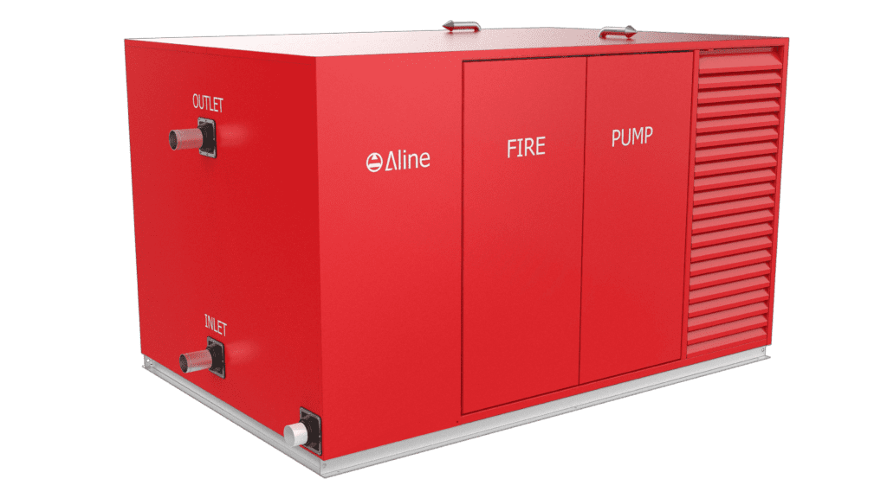
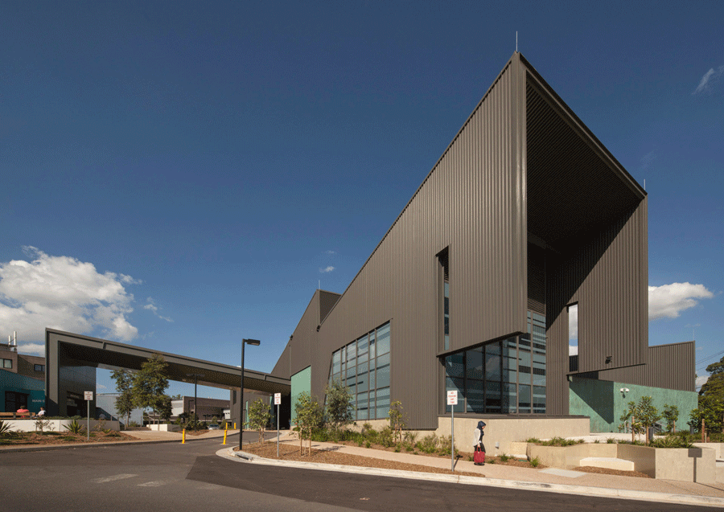
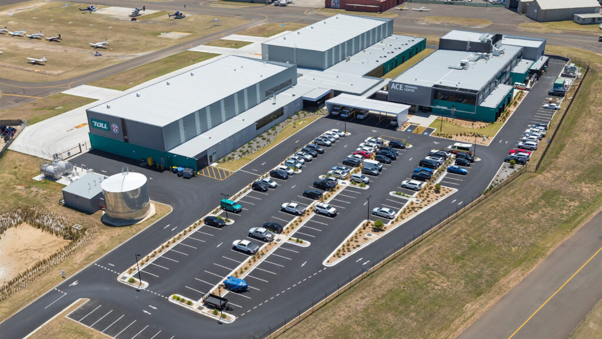

Water Storage Tanks
Engineered for durability and compliance with Australian standards AS 2941:2013. Trusted solutions for commercial and industrial fire protection applications.
MAKE AN ENQUIRY Download Specification SheetOur Water Tank Solutions

Rectangular Water Tanks
Space-efficient square design ideal for installations with limited space. Robust construction meets all fire protection requirements.
- Optimized for tight spaces
- AS 2941:2013 compliant
- Corrosion-resistant coating
- Multiple capacity options

Round Water Tanks
Traditional cylindrical design offering maximum structural integrity. Perfect for high-capacity fire protection systems.
- Superior structural strength
- Large capacity options
- Proven reliability
- Easy maintenance access
Complete Fire pump + Tank Solutions

Fire Pumpsets
High-performance pump systems designed for reliable fire protection water delivery. View Fire Pumpsets
Single Pump Enclosures
Weather-resistant enclosures protecting single pump installations from environmental factors. View Single Enclosures
Dual Pump Enclosures
Robust dual pump housing solutions for redundant fire protection system configurations. View Dual EnclosuresProject Highlights
Trusted by Australia's leading fire protection contractors
Nepean Hospital
Critical healthcare facility fire protection system installation in Penrith. View Case StudyWestern Sydney University
Educational facility fire safety system at Bankstown campus. View Case Study
Bankstown Airport
Aviation facility fire protection infrastructure for critical operations. View Case StudyCompliance with Australian Standards
AS 2941:2013 Certified for Fire Protection ApplicationsDesign & Performance
Engineered to meet strict performance criteria for fire protection systems.Certification
Full compliance documentation and third-party certification available.Reliability & Safety
Proven track record of reliable operation in critical fire safety applications.Legal Compliance
Meets all regulatory requirements for commercial and industrial installations.Delivery, Installation & Maintenance
Ordering & Dispatch
- Short lead times for urgent projects
- Comprehensive testing before dispatch
- Full quality assurance documentation
- Secure packaging and logistics
Commissioning & Testing
- Professional on-site installation
- System certification and testing
- Compliance reporting and documentation
- Handover training for operators
Ongoing Maintenance
- Tailored maintenance packages
- Fast technician response times
- Genuine spare parts inventory
- 24/7 emergency support available
Get a Project Quote or Specification Sheet Today
Ready to discuss your industrial water tank requirements? Fill out the form below and our team of experts will provide detailed specifications and competitive pricing for your fire protection project.
{Hubspot form}